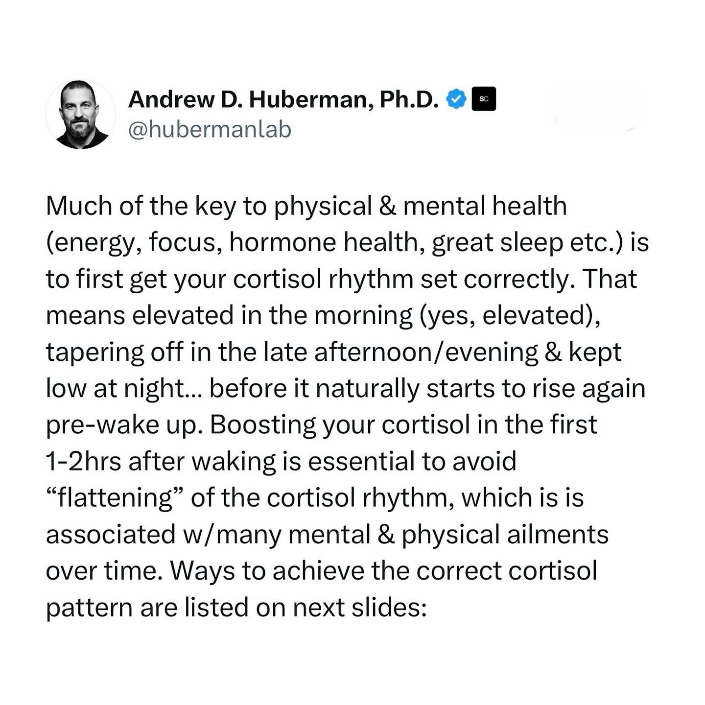
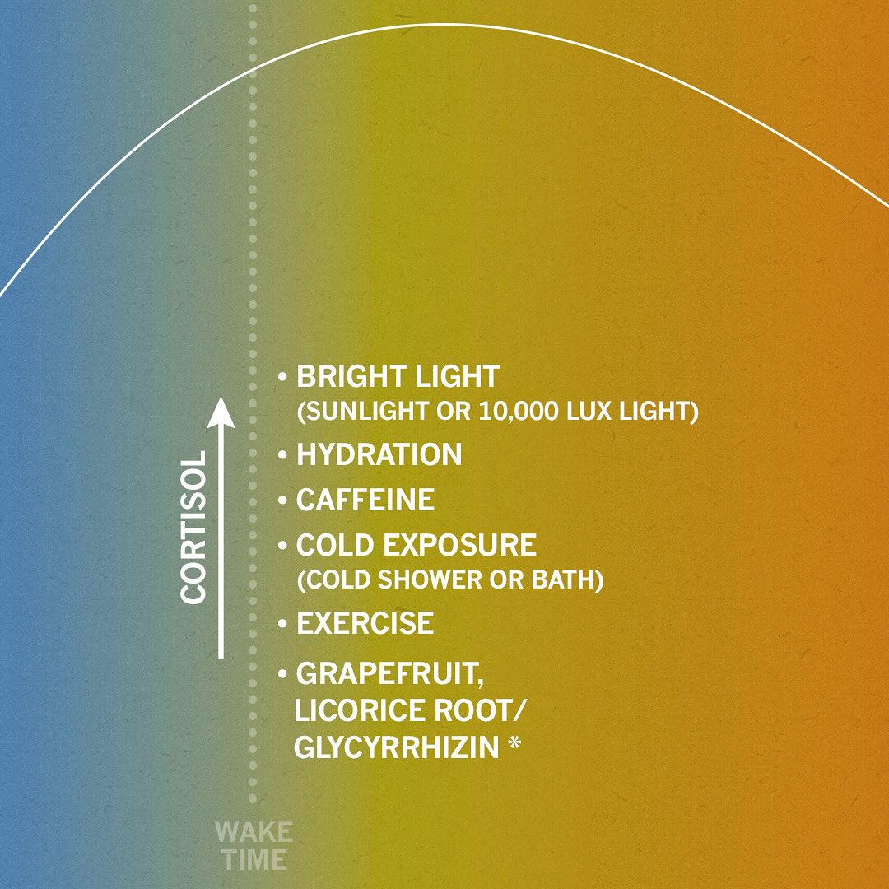

Andrew D | CORTISOL BRIGHT LIGHT (SUNLIGHT OR 10,000 LUX LIGHT) HYDR... | AVOID BRIGHT LIGHT (DIM LIGHTS OR USE RED LIGHT) LONG EXH...
Caption
SET YOUR FOUNDATION OF PHYSICAL & MENTAL HEALTH BY SETTING YOUR CORTISOL RHYTHM • - Everyone would like to wake up feeling energized, in a good mood and able to focus on their activities for the day, including push back on stress as needed, and then relax into a terrific nights sleep. These are the hallmarks of excellent physical and mental health. Cortisol is really at the foundation of all of it. - Everyone has a natural 24 hour circadian rhythm in cortisol whereby their levels of cortisol vary dramatically across the 24 hour cycle. This is independent of stress. - There’s an abundance of data showing that when your cortisol levels are elevated significantly in the morning and lower in the afternoon and at night, it supports robust daytime energy and focus, improved mood, ability to combat infections, and excellent sleep. - There are numerous ways to increase morning cortisol, especially in the 2hrs after waking. Some are listed on the slide and the details are on the Huberman lab podcast out now. - It’s advantageous to keep your cortisol low in the evening and at night. Even if you exercise at night, that is possible. I explain the protocols for lowering cortisol at night in the episode as well. - It’s important to know that many people do the right things but at the wrong times with respect to cortisol. - It’s also critical to point out that women’s and men’s cortisol rhythms (even pregnant women), are remarkably similar in overall 24hr pattern. This has been looked at many times. However, during the luteal phase of their cycle & menopause, there is a tendency for women’s cortisol rhythms to flatten: lower in the morning and higher in the pm. This can be offset using the tools listed on these slides. There are others as well. Discussed in the episode. - *NOTE: licorice root potently increases cortisol. Avoid at night and approach with caution! Licorice can raise blood pressure and is contraindicated with some meds. - Put any questions you have in the comment section below this post and as always, thank you for your interest in science! - @stanford.med @stanford - #neuroscience #science #ciencia #neurociencia #cortisol #energy
